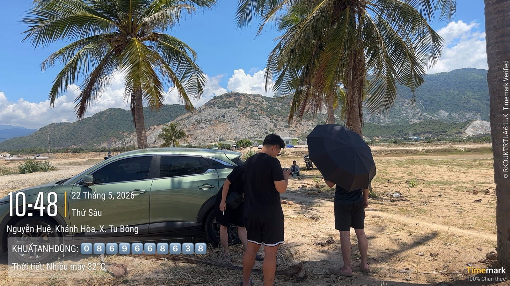

Mua lô tái định cư: hỏi mốc giao đất và hạ tầng trước khi hỏi giá
Lô tái định cư thường được chào với một câu rất dễ nghe: giá mềm hơn đất dự án cùng khu. Điều đó có thể đúng. Nhưng thứ người mua lô tái định cư hay trả giá đắt nhất lại không nằm ở con số trên bảng giá — nó nằm ở thời gian: bao lâu nữa mới có đường, có điện nước, có sổ, và bao lâu nữa mới bán lại được.

Ảnh minh hoạ một buổi đi thực địa — không phải khu tái định cư nào được nhắc trong bài.
Một bản tin giám sát cho thấy rủi ro nằm ở đâu
Ngày 5/11/2026, Báo Khánh Hoà đưa tin đoàn giám sát của HĐND tỉnh vừa làm việc với 4 dự án tái định cư và ghi nhận nhiều vướng mắc kéo dài (nguồn: Báo Khánh Hoà, 5/11/2026). Tôi tra lại bài gốc sáng 11/11 và chép lại đúng số liệu trong bài:
| Dự án | Tình trạng được nêu |
|---|---|
| Khu TĐC Vĩnh Thái (phường Nam Nha Trang) | Duyệt chủ trương đầu tư từ 2017, đến nay chưa hoàn thành. Trong 83 trường hợp bị ảnh hưởng còn 35 chưa bàn giao mặt bằng; 14 trường hợp đã có quyết định giao đất tái định cư nhưng chưa ai nhận đất; san nền mới đạt 45,34%. |
| Khu TĐC Vạn Thắng (giai đoạn 1) | Đến 20/10, giải phóng mặt bằng 85,65% nhưng xây lắp mới khoảng 45%; đã điều chỉnh thời gian thực hiện đến 2027. |
| Mở rộng hạ tầng Khu TĐC Ninh Mã (giai đoạn 2), xã Đại Lãnh | Phần lớn diện tích chưa phù hợp các đồ án quy hoạch liên quan của Khu kinh tế Vân Phong; đang lập quy hoạch chi tiết 1/500. |
| Di dời và TĐC phía đông đường Trần Hưng Đạo (xã Vạn Ninh) | 183/202 trường hợp đã bàn giao mặt bằng, nhưng san nền mới khoảng 32% do thiếu đất đắp; phấn đấu xong trong tháng 11/2026. |
Bốn dự án, bốn kiểu chậm khác nhau: vướng đền bù, vướng quy hoạch, vướng vật liệu. Nhưng điểm chung thì giống nhau — trên giấy đã có khu tái định cư, ngoài thực địa thì chưa xong. Chi tiết làm tôi dừng lại lâu nhất là 14 trường hợp đã có quyết định giao đất mà chưa ai nhận: có giấy giao đất chưa có nghĩa là đã có một mảnh đất dùng được.
Bài này không bàn về bất kỳ lô nào trong bốn dự án trên. Tôi dùng bản tin giám sát như một tấm gương: nếu chính cơ quan dân cử còn phải đi kiểm từng hạng mục, thì người bỏ tiền mua một lô tái định cư càng cần hỏi kỹ trước khi nghĩ đến giá.
Câu 1: Khu này đã bàn giao mặt bằng đủ chưa?
Khu tái định cư chỉ thi công đồng bộ được khi mặt bằng sạch. Còn vài hộ chưa đồng thuận đền bù là nhà thầu phải làm chỗ có, chỗ không — đường làm dở, cống đặt nửa chừng. Hỏi cho ra:
- Tỷ lệ giải phóng mặt bằng của cả khu hiện là bao nhiêu, và phần quanh lô mình đã sạch chưa.
- Có hộ nào đang khiếu nại hoặc chưa nhận tiền ở ngay tuyến đường dẫn vào lô không.
- Thông tin này lấy từ đâu — lời người bán, hay thông báo của ban quản lý dự án, của UBND phường/xã.
Câu 2: Hạ tầng xong phần nào, phần nào còn nằm trên bản vẽ?
Bản vẽ phân lô có đủ đường, vỉa hè, cây xanh. Thực địa thì có khi mới san nền. Tôi tách hạ tầng thành bốn thứ và hỏi từng thứ một: đường (đã trải nhựa hay mới cấp phối), điện (đã kéo tới lô chưa), nước sạch, và thoát nước — thứ hay bị bỏ quên nhất, nhưng mùa mưa ở Nha Trang thì nó quyết định lô đất có ở được hay không.
Cách kiểm đơn giản nhất vẫn là đi tận nơi, tốt nhất là đi sau một trận mưa. Và hỏi thêm: dự án đã được điều chỉnh tiến độ lần nào chưa, mốc hoàn thành hiện tại là năm nào. Một dự án từng lùi hạn thì chưa chắc chỉ lùi một lần.
Câu 3: Lô này đã có sổ, hay mới là quyết định giao đất, biên bản bốc thăm?
Với đất tái định cư, giấy tờ đi qua nhiều nấc: quyết định giao đất tái định cư, biên bản bốc thăm vị trí, biên bản bàn giao đất ngoài thực địa, rồi mới đến giấy chứng nhận quyền sử dụng đất. Mỗi nấc là một mức an toàn khác nhau cho người mua lại.
- Hỏi rõ lô đang ở nấc nào, xem bản gốc giấy tờ đó.
- Nếu chưa có sổ: người được bố trí tái định cư đã nộp xong tiền sử dụng đất chưa, hay còn nợ, còn ghi nợ.
- Giao dịch khi chưa có sổ thì ký loại giấy gì, công chứng được không, và nếu sau này cấp sổ thì sổ đứng tên ai.
Những câu này nên hỏi cả văn phòng đăng ký đất đai và một luật sư độc lập, không chỉ hỏi bên bán.
Câu 4: Có ràng buộc chuyển nhượng nào với người được bố trí tái định cư không?
Đất tái định cư được giao cho một hộ cụ thể vì họ bị ảnh hưởng bởi dự án. Vì vậy có thể đi kèm điều kiện: thời gian không được chuyển nhượng, nghĩa vụ tài chính còn treo, hoặc quy định riêng của địa phương trong từng quyết định giao đất. Tôi không liệt kê sẵn điều kiện nào ở đây, vì mỗi quyết định có thể ghi khác nhau — đó chính là lý do phải đọc nguyên văn quyết định giao đất của đúng lô mình định mua và hỏi cơ quan cấp nó.
Với lô tái định cư, câu "bao nhiêu tiền" nên là câu hỏi cuối cùng. Câu đầu tiên là "bao giờ thì dùng được".
Vì sao tôi để giá xuống cuối
Một lô rẻ hơn mặt bằng khu vực nhưng phải chờ thêm hai, ba năm mới có hạ tầng và có sổ thì phần "rẻ hơn" đó đang đổi lấy thời gian và rủi ro. Khi đã có câu trả lời cho bốn câu trên, anh/chị mới so được giá lô đó với một lô đã xong hạ tầng, đã có sổ ở gần đó — hai thứ mới thật sự cùng hệ quy chiếu.
Đây cũng là cách tôi đọc mọi thông tin quy hoạch: bức tranh chung chỉ cho biết khu vực đang đi hướng nào, còn số phận của một lô đất nằm ở hồ sơ pháp lý và hiện trạng của chính lô đó.
Việc có thể làm trước khi đặt cọc
- Đi thực địa, chụp lại đường vào, cột điện, đường ống, rãnh thoát nước quanh lô.
- Xin xem bản gốc giấy tờ đang có của lô và ghi rõ nó là nấc nào.
- Hỏi UBND phường/xã hoặc ban quản lý dự án về tiến độ giải phóng mặt bằng và mốc hoàn thành hạ tầng.
- Nhờ luật sư đọc quyết định giao đất tái định cư để tìm điều kiện chuyển nhượng.
- Chỉ khi bốn việc trên xong mới bàn giá.
Số liệu về bốn dự án tái định cư lấy từ bài "Tập trung gỡ vướng cho các khu tái định cư" của Báo Khánh Hoà ngày 5/11/2026, tra cứu lại ngày 11/11/2026; tình trạng dự án có thể đã thay đổi sau ngày đó. Bài không đánh giá, không chào bán và không khuyến nghị mua hay không mua bất kỳ lô đất nào. Điều kiện pháp lý của từng lô theo quyết định giao đất và hướng dẫn của cơ quan có thẩm quyền; bài không phải tư vấn pháp lý.
"Rồi, ngày mới tốt lành nhé."
Sống tử tế · Kiếm tiền hạnh phúc · Cho đi giá trị
Muốn nhận bản tin thị trường qua Zalo?
Tôi đọc tin thị trường và gửi bản tóm tắt cho khách qua Zalo vào sáng thứ Ba, thứ Năm, thứ Bảy, kèm tổng hợp cuối tuần — có ghi nguồn và nói rõ chỗ nào số liệu đang vênh. Nhắn "BẢN TIN" để nhận miễn phí.
Nhắn Zalo — 0869 668 638